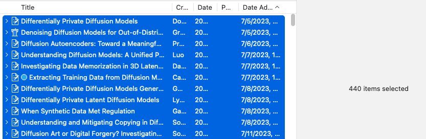
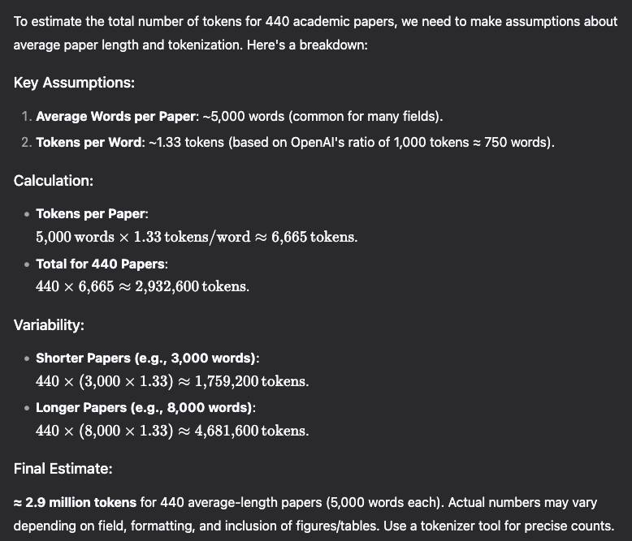

Tossaporn Saengja back

random realization: เหตุเกิดจาก backup zotero แล้วเจอว่าใน library มีอยู่ 440 items (~5GB) เลยขอถาม DeepSeek-R1 ที่ฮอตฮิตตอนนี้สักหน่อย ได้ความว่าทั้งหมดนี้ตีประมาณได้เป็น 2.9M tokens
DeepSeek-V3 ที่เป็น base ของ R1 เนี่ย pretrain บน text จำนวน 14.8T tokens นี่มันเยอะกว่าทั้ง zotero library ผมไป 5M เท่า

V3 ใช้เวลา pretrain หรือว่าอ่าน text ทั้งหมดนั้นอยู่ 2.8M H800 GPU hours ส่วนเราที่ใช้ประมาณ 13k human hours (นับจากวันแรกที่เริ่มใช้คือ july 5, 2023 แถมไม่ได้อ่านตลอดเวลา) ซึ่งโอเค มันมี caveat นิดนึงคือ
V3 อ่านทั้งหมด แต่ผมอ่านไม่หมดแน่ ๆ หลาย ๆ อันน่าจะอ่านแค่ abstract เร็ว ๆ ด้วยซ้ำ อีกอย่างผมตอบไม่ได้ว่าที่อ่านไปเนี่ย เข้าใจ (internalize) ขนาดไหน ส่วนของ V3 นี่ไม่รู้เหมือนกันว่านับเป็น internalize ได้มั้ยยังไง (นอกเรื่อง: ตอนเป็น TA ที่มหาลัยนี่มีอาจารย์เคยพูดตอนออกข้อสอบว่าเราวัดไม่ได้หรอกว่านักเรียนเข้าใจเนื้อหาจริง ๆ หรือเปล่า ตอนเป็นอาจารย์ก็เห็นด้วยกับสิ่งนี้ คือพอจะเดาได้ว่าเข้าใจมั้ยด้วย some confidence score)
ถ้าเป็นเรื่องเงินนี่ V3 (ก่อนจะเป็น R1) ใช้ไป $5.5M ส่วยผมเนี่ยเสียค่าเทอมไปอย่างน้อย $300K นี่คือ 18-20 เท่า แต่นึกภาพตัวเอง 20 คน ก็ไม่คิดว่าจะสู้หรือเทียบอะไร V3 ได้
พอเทียบไปมาแล้ว LLM ดู efficient กว่าตัวเอง แถม cost น่าจะลงได้เรื่อย ๆ อีก กลับกัน ส่วนตัวแล้วเราคงไม่อยากจะลด cost ตัวเอง (i.e. ไม่น่ามีคนอยากเงินเดือนลด in the long run)
เขียนออกมาแล้วไม่รู้ว่า takeaway เป็นอะไร สรุปเปนโพสบ่นไปเรื่อยอีกและ